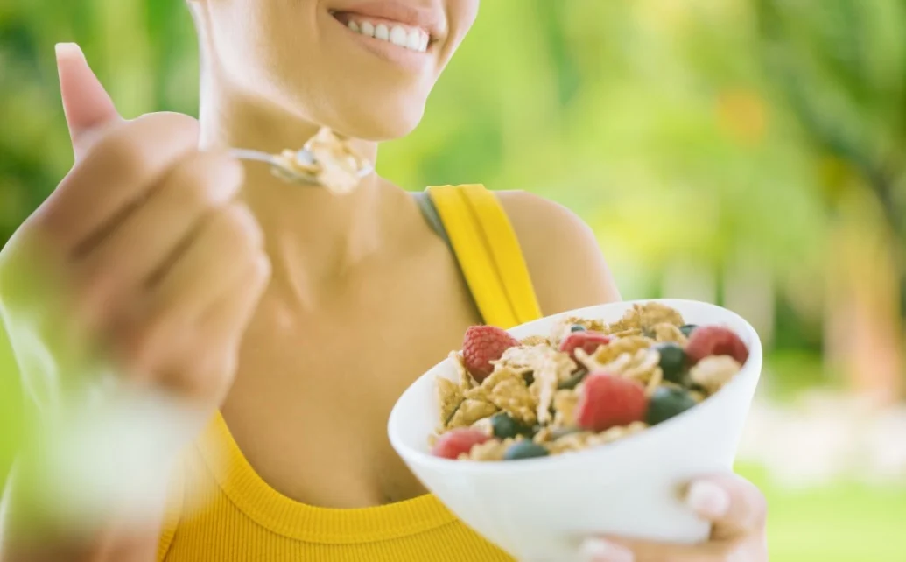

Top dicas fáceis para emagrecer sem fazer exercicios ou dietas malucas

cuidado!!
um breve aviso a respeito do uso de Anticoncepcional para emagrecer.
“Anticoncepcional não emagrece. Não existe nenhuma evidência científica que seu uso possa contribuir para a perda de peso.”,afirma Cintia Cercato, presidente do Departamento de Obesidade da Sociedade...
algumas pessoas defendem essa pratica perigosa, mas tome muito cuidado com esses métodos encontrados por ai, por isso os métodos naturais são Os melhores métodos para se ultilizar no dia a dia, e os mais saudaveis!!
Mastigue bem
Não precisa ter pressa para fazer suas refeições! Estudos comprovaram que quanto mais você mastigar um alimento, menor é a quantidade de comida que você ingere. A explicação é fácil: o organismo demora cerca de 20 minutos para associar que está saciado, então, se você comer rápido demais, pode passar da conta sem mesmo perceber que já estava satisfeito.Coma de 3 em 3 horas
Ninguém precisa passar fome para perder peso! Se você quer emagrecer sem fazer dietas, divida suas refeições em porções pequenas e coma mais vezes ao dia. Assim, você evita exageros porque dificilmente ficará com muita fome e ainda mantém seu metabolismo sempre acelerado. Existem, também, outras maneiras de emagrecer que baseiam-se em um número menor de refeições diárias. São maneiras válidas, mas mais difíceis de executar por quem não tem o hábito de fazer dietas.Não pule o café da manhã
Sua mãe estava certa quando falava que o café da manhã é a refeição mais importante do dia. Quem não come nada pela manhã sente mais fome ao passar das horas e tem mais chance de se alimentar de forma incorreta (com muitos carboidratos, por exemplo, que dão energia de forma rápida, mas que favorecem o aumento de peso). O ideal é se alimentar de forma leve e nutritiva, unindo proteínas, carboidratos (integrais, de preferência) e vitaminas.chá para emagrecer rápido e perder barriga
Existem alguns chás, como o de gengibre, de hibisco ou de cúrcuma, que ajudam a eliminar o excesso de líquido do corpo, a controlar a fome e aumentar o metabolismo, pro exemplo, favorecendo a perda de peso e ajudando a perder a barriga.1. Chá de gengibre com abacaxi

O chá de gengibre com abacaxi é ótimo para pessoas que desejam emagrecer, pois ajuda a acelerar o metabolismo, estimulando o gasto de energia, além de promover a saciedade e contribuir para o bom funcionamento do intestino, já que é rico em fibras.
Ingredientes:
- Casca de ½ abacaxi;
- Casca de 1 laranja;
- 1 colher de sopa de carqueja;
- 1 colher de sopa de gengibre em pó;
- 1 litro de água.
Em uma chaleira ou panela, adicionar água, a casca de abacaxi e de laranja, e a colher de sopa de gengibre e depois levar ao fogo para ferver durante 5 a 10 minutos. Após ferver, desligar o fogo e adicionar a carqueja. Tampar, deixar repousar por 5 minutos, coar e beber. Este chá deve ser bebido ao longo do dia, entre as refeições.
Aumente o consumo de fibras
Além de promover diversos benefícios para a saúde, o consumo diário de fibras aumenta a saciedade e controla o índice glicêmico do organismo, evitando picos de insulina no sangue (o que favorece no emagrecimento). O ideal, para os adultos, é que o consumo seja de 20 a 30 gramas por dia.AInsira termogênicos no seu cardápio
 Uma dica de ouro para quem quer emagrecer sem fazer dietas é adicionar alimentos termogênicos ao cardápio. Gengibre, pimenta, canela e chá verde são boas opções. Eles são responsáveis por acelerar o metabolismo, aumentando o gasto calórico em até 15% ao dia.
Uma dica de ouro para quem quer emagrecer sem fazer dietas é adicionar alimentos termogênicos ao cardápio. Gengibre, pimenta, canela e chá verde são boas opções. Eles são responsáveis por acelerar o metabolismo, aumentando o gasto calórico em até 15% ao dia.
Algums alimentos termogênicos :
-
1. Canela
A canela, tanto em pedaço ou em pó, é um exemplo de alimento que contém ação termogênica, pois apresenta um grau maior de dificuldade para ser digerida pelo organismo, deixando o metabolismo acelerado. Isso, somado ao alto teor de cálcio mineral, favorece o emagrecimento. -
2. Chá verde
A canela, tanto em pedaço ou em pó, é um exemplo de alimento que contém ação termogênica, pois apresenta um grau maior de dificuldade para ser digerida pelo organismo, deixando o metabolismo acelerado. Isso, somado ao alto teor de cálcio mineral, favorece o emagrecimento. -
1. Gengibre
A canela, tanto em pedaço ou em pó, é um exemplo de alimento que contém ação termogênica, pois apresenta um grau maior de dificuldade para ser digerida pelo organismo, deixando o metabolismo acelerado. Isso, somado ao alto teor de cálcio mineral, favorece o emagrecimento.
Consuma alimentos com Ômega 3
O Ômega 3 é um ácido graxo responsável por elevar os níveis de serotonina, o hormônio do bem-estar, também responsável por controlar o apetite. Quando ele está em falta, o corpo produz uma quantidade elevada de cortisona – hormônio que eleva o apetite e está diretamente ligado ao aumento do peso. Sardinha, atum, nozes, chia e linhaça são alguns exemplos de alimentos que você deve acrescentar ao seu cardápio para evitar que isso aconteça.Beba água
 A água é uma grande aliada na perda de peso por dois motivos: o primeiro é que a bebida está diretamente ligada à eliminação do sódio do organismo, auxiliando o corpo a reter menos líquidos. Além disso, o consumo de dois copos de água antes das principais refeições ajuda na saciedade, fazendo com que você coma menos.
A água é uma grande aliada na perda de peso por dois motivos: o primeiro é que a bebida está diretamente ligada à eliminação do sódio do organismo, auxiliando o corpo a reter menos líquidos. Além disso, o consumo de dois copos de água antes das principais refeições ajuda na saciedade, fazendo com que você coma menos.
Durma bem
![durma bem]() Quem dorme pouco produz mais grelina, hormônio que aumenta a sensação de fome e contribui no estoque de gordura. Além disso, um estudo feito pela Universidade de Chicago concluiu que dormir mal retarda o metabolismo, fazendo com que a queima calórica aconteça mais lentamente.
Quem dorme pouco produz mais grelina, hormônio que aumenta a sensação de fome e contribui no estoque de gordura. Além disso, um estudo feito pela Universidade de Chicago concluiu que dormir mal retarda o metabolismo, fazendo com que a queima calórica aconteça mais lentamente.
Faça atividades físicas
Emagrecer sem fazer dietas é possível, mas emagrecer sem praticar exercícios físicos não é um caminho tão fácil assim. Pense na gordura como um combustível: você precisa se movimentar para queimá-la.Vale de tudo! Musculação, corrida ou algum esporte da sua preferência – o importante é que você esteja sempre em movimento. Isso aumenta o metabolismo do seu corpo e faz com que você queime as tão incômodas gordurinhas com muito mais rapidez.
Emagrecer sem fazer dietas é possível!
Chega de contar calorias! Uma alimentação saudável não significa uma alimentação restrita, nem mesmo uma alimentação regrada.
Veja o método utilizado por milhares de mulheres e homens do mundo inteiro para perder peso de forma rapida, com receitas simples que te ajudaram a perder de 10kg a 15kg em até um mês.
A dica de ouro para emagrecer sem fazer dietas é aumentar o consumo de alimentos saudáveis e comer menos carboidratos e gorduras, principalmente no período noturno. Você não precisa se privar de comer aquilo que gosta, basta comer em quantidades pequenas e nos horários corretos.
Além disso, é essencial que você siga uma rotina de exercícios físicos. Se você não tem tempo e/ou disposição para se aventurar em uma academia, saiba que é possível perder muito peso sem sair de casa. O segredo são os eficientes e poderosos programas online de exercícios feitos exclusivamente para quem quer emagrecer rapidamente de forma saudável e segura. E o melhor: quando e onde a pessoa quiser.